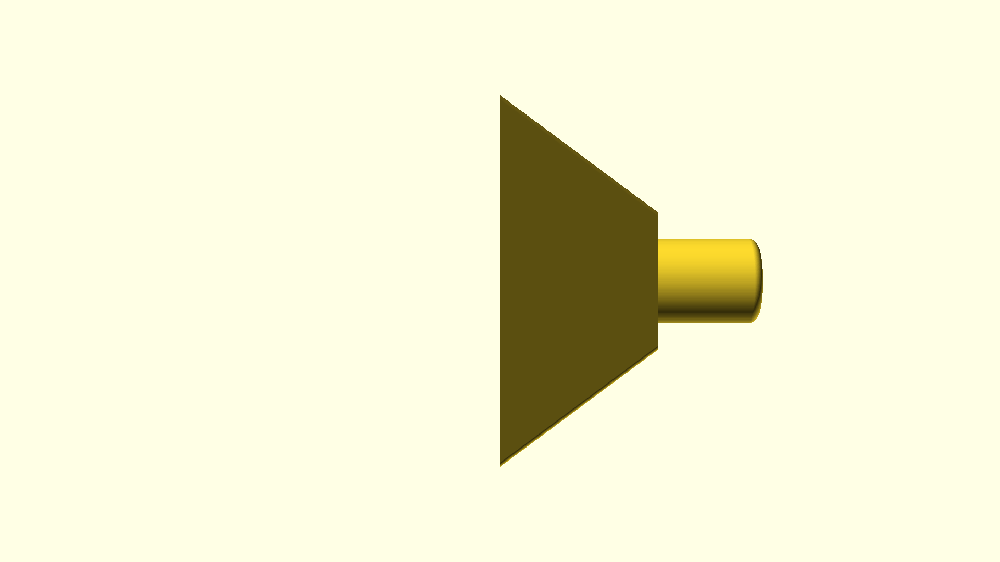
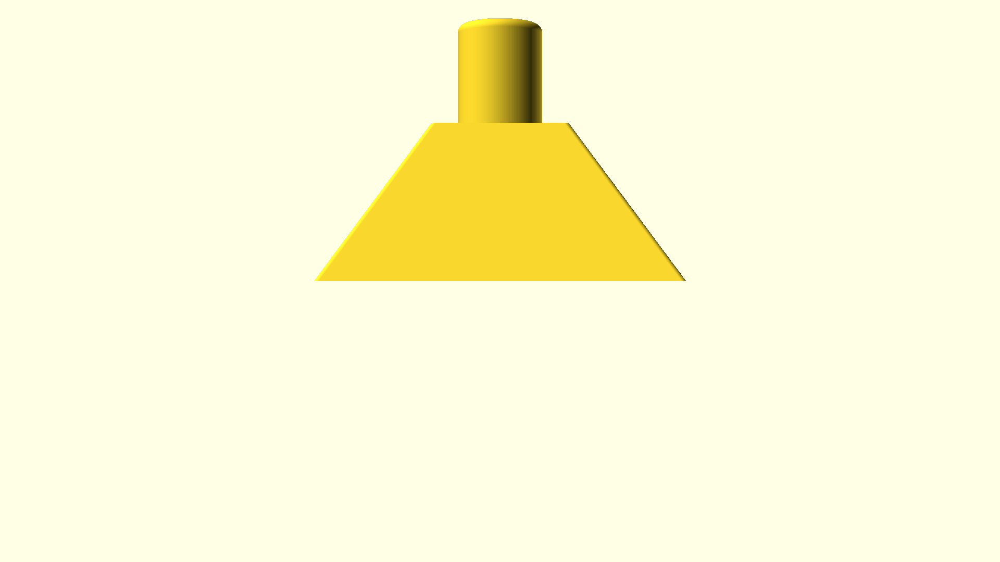
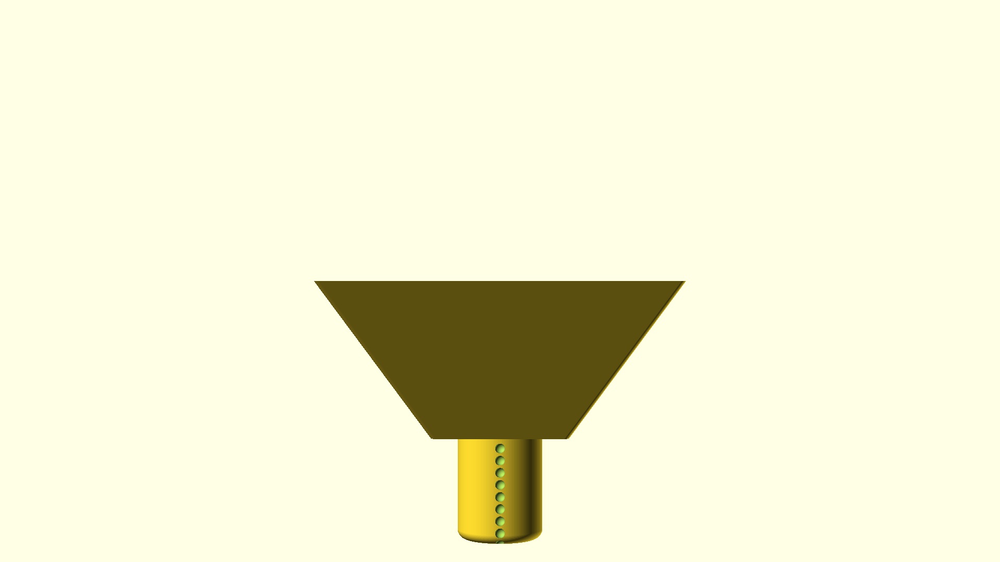
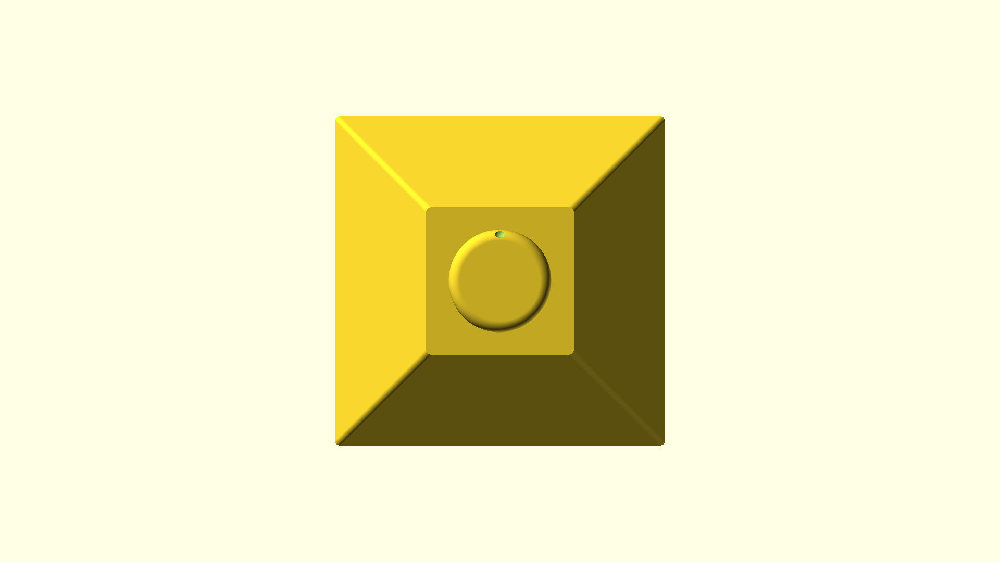

hand-press-plate
Global Parameters
| Parameter | Value |
|---|---|
| renderType |
Input Paths
| Path |
|---|
| ./hand-press-plate.scad |
STL Generation Results
Generated 1 stl files
| Instance | Output Path | Command | Time Taken | Params | Error |
|---|---|---|---|---|---|
| default | hand-press-plate/export/v0_1/hand-press-plate-.stl | openscad -o hand-press-plate/export/v0_1/hand-press-plate-.stl -D 'version="v0.1"' -D 'renderType=""' -D 'designFileName="hand-press-plate"' -D 'name="default"' -D 'part_id_letter="A"' "./hand-press-plate/hand-press-plate.scad" --render --backend=manifold | 7.755110875s | Params |
Image Generation Results
Generated 7 images
| Instance | Camera | Output Path | Command | Time Taken | Preview | Error |
|---|---|---|---|---|---|---|
| default | top | hand-press-plate/export/v0_1/hand-press-plate--top.png | /opt/homebrew/bin/openscad -o hand-press-plate/export/v0_1/hand-press-plate--top.png --imgsize 1920,1080 --projection perspective --camera 0,0,0,0,0,0,300 --preview -D 'renderType=""' -D 'designFileName="hand-press-plate"' -D 'name="default"' -D 'version="v0.1"' ./hand-press-plate/hand-press-plate.scad | 5.257870916s | ||
| default | left | hand-press-plate/export/v0_1/hand-press-plate--left.png | /opt/homebrew/bin/openscad -o hand-press-plate/export/v0_1/hand-press-plate--left.png --imgsize 1920,1080 --projection perspective --camera 0,0,0,0,90,0,300 --preview -D 'version="v0.1"' -D 'renderType=""' -D 'designFileName="hand-press-plate"' -D 'name="default"' ./hand-press-plate/hand-press-plate.scad | 5.185558875s |  | |
| default | right | hand-press-plate/export/v0_1/hand-press-plate--right.png | /opt/homebrew/bin/openscad -o hand-press-plate/export/v0_1/hand-press-plate--right.png --imgsize 1920,1080 --projection perspective --camera 0,0,0,0,0,0,300 --preview -D 'renderType=""' -D 'designFileName="hand-press-plate"' -D 'name="default"' -D 'version="v0.1"' ./hand-press-plate/hand-press-plate.scad | 5.192812542s |  | |
| default | back | hand-press-plate/export/v0_1/hand-press-plate--back.png | /opt/homebrew/bin/openscad -o hand-press-plate/export/v0_1/hand-press-plate--back.png --imgsize 1920,1080 --projection perspective --camera 0,0,0,270,0,0,300 --preview -D 'renderType=""' -D 'designFileName="hand-press-plate"' -D 'name="default"' -D 'version="v0.1"' ./hand-press-plate/hand-press-plate.scad | 5.171145292s |  | |
| default | front | hand-press-plate/export/v0_1/hand-press-plate--front.png | /opt/homebrew/bin/openscad -o hand-press-plate/export/v0_1/hand-press-plate--front.png --imgsize 1920,1080 --projection perspective --camera 0,0,0,90,0,0,300 --preview -D 'name="default"' -D 'version="v0.1"' -D 'renderType=""' -D 'designFileName="hand-press-plate"' ./hand-press-plate/hand-press-plate.scad | 5.238203625s |  | |
| default | bottom | hand-press-plate/export/v0_1/hand-press-plate--bottom.png | /opt/homebrew/bin/openscad -o hand-press-plate/export/v0_1/hand-press-plate--bottom.png --imgsize 1920,1080 --projection perspective --camera 0,0,0,180,0,0,300 --preview -D 'version="v0.1"' -D 'renderType=""' -D 'designFileName="hand-press-plate"' -D 'name="default"' ./hand-press-plate/hand-press-plate.scad | 5.167027167s |  | |
| default | custom | hand-press-plate/export/v0_1/hand-press-plate--custom.png | /opt/homebrew/bin/openscad -o hand-press-plate/export/v0_1/hand-press-plate--custom.png --imgsize 1920,1080 --projection perspective --camera 0,0,130,130,130,0,300 --preview -D 'designFileName="hand-press-plate"' -D 'name="default"' -D 'version="v0.1"' -D 'renderType=""' ./hand-press-plate/hand-press-plate.scad | 5.183222333s |
Generated Instances
| Name | Description | Output Path | Ignored Params | designFileName | name | version | renderType | |
|---|---|---|---|---|---|---|---|---|
| default | hand-press-plate/export/v0_1/hand-press-plate-.stl | [] | hand-press-plate | default | v0.1 |
Configuration Details
Version: v0.1
Output Path:
OpenSCAD Version:
OpenSCADGen Version:
Quality:
Set Build Info In File Attributes
Output Paths
OutputPath: hand-press-plate/export/v0_1
ExportFolderPath: hand-press-plate/export/v0_1
ReadmePath: hand-press-plate/export/v0_1/README.md
LogOutputPath: hand-press-plate/export/v0_1/export_log.log